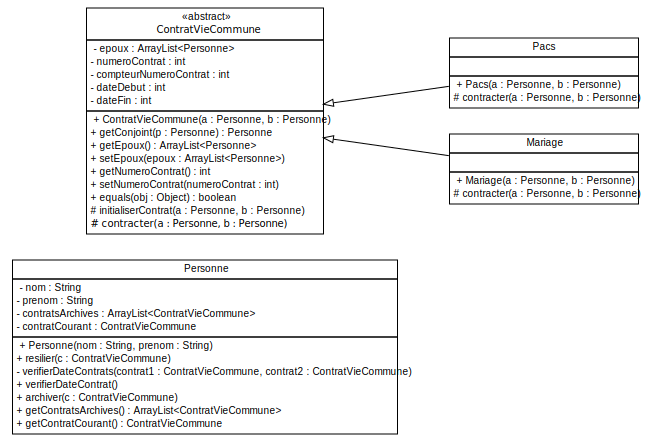

<!doctype html>
<html lang="en">
    <head>
        <meta charset="utf-8">
        <title>reveal-md</title>
        <link rel="stylesheet" href="./css/reveal.css">
        <link rel="stylesheet" href="./css/theme/white.css" id="theme">
        <link rel="stylesheet" href="./css/highlight/zenburn.css">
        <link rel="stylesheet" href="./css/print/paper.css" type="text/css" media="print">

    </head>
    <body>

        <div class="reveal">
            <div class="slides"><section  data-markdown><script type="text/template">### TP7 - Relations maritales
----------------------

</script></section><section  data-markdown><script type="text/template">#### Modélisation UML


<small>(Diagramme partiel attributs/opérations manquantes)</small>
</script></section><section  data-markdown><script type="text/template">#### Zoom sur le constructeur

<pre  width="100%" height="100%"><code>
public class ContratVieCommune{
    private ArrayList<> epoux;
    private int numeroContrat;
    private static int compteurNumeroContrat = 0;
    public ContratVieCommune(Personne a, Personne b) {
        epoux = new ArrayList<>(2);
        // On incremente le compteur
        compteurNumeroContrat = compteurNumeroContrat + 1;
        // On affecte le numero de contrat
        numeroContrat = compteurNumeroContrat;
        contracter(a, b);
    }
}
</code></pre></script></section><section  data-markdown><script type="text/template">#### Méthode contracter de la classe Pacs ?
<pre><code>
public class Pacs extends ContratVieCommune {
	public Pacs(Personne a, Personne b) {
		super(a, b);
	}	
	
	protected void contracter(Personne a, Personne b) {
	// ?
	}

}
</code></pre>
</script></section><section  data-markdown><script type="text/template">
#### Méthode "contracter" de la classe Pacs
<pre><code>
public class Pacs extends ContratVieCommune {
	...
    public Pacs(Personne a, Personne b) {
		super(a, b);
	}		
	protected void contracter(Personne a, Personne b) {
        // Si aucun contrat n'est en cours le PACS est contracté
		if (a.getContratCourant() == null && b.getContratCourant() == null) {
			initialiserContrat(a, b);
		} else {
			System.err.println(MessagesErreur.CONTRAT_EN_COURS);
		}
	}

}
</code></pre>

> Ou met-on la méthode initialiserContrat ?
</script></section><section  data-markdown><script type="text/template">
#### Méthode "initialiserContrat"
<pre><code>
public class ContratVieCommune{
    ...
    protected void initialiserContrat(Personne a, Personne b){        
        GregorianCalendar calendar = new GregorianCalendar();
        int dateDebut = calendar.get(Calendar.YEAR);
        this.setDateDebut(dateDebut);        
        getEpoux().add(a);
        getEpoux().add(b);
        // On positionne l'instance de contrat en cours 
        // en tant que contrat courant pour a et b
        a.setContratCourant(this);
        b.setContratCourant(this);        
    }
}
</code></pre>
</script></section></div>
        </div>

        <script src="./lib/js/head.min.js"></script>
        <script src="./js/reveal.js"></script>

        <script>
            function extend() {
              var target = {};
              for (var i = 0; i < arguments.length; i++) {
                var source = arguments[i];
                for (var key in source) {
                  if (source.hasOwnProperty(key)) {
                    target[key] = source[key];
                  }
                }
              }
              return target;
            }

            // Optional libraries used to extend on reveal.js
            var deps = [
              { src: './lib/js/classList.js', condition: function() { return !document.body.classList; } },
              { src: './plugin/markdown/marked.js', condition: function() { return !!document.querySelector('[data-markdown]'); } },
              { src: './plugin/markdown/markdown.js', condition: function() { return !!document.querySelector('[data-markdown]'); } },
              { src: './plugin/highlight/highlight.js', async: true, callback: function() { hljs.initHighlightingOnLoad(); } },
              { src: './plugin/zoom-js/zoom.js', async: true },
              { src: './plugin/notes/notes.js', async: true },
              { src: './plugin/math/math.js', async: true }
            ];

            // default options to init reveal.js
            var defaultOptions = {
              controls: true,
              progress: true,
              history: true,
              center: true,
              transition: 'default', // none/fade/slide/convex/concave/zoom
              dependencies: deps
            };

            // options from URL query string
            var queryOptions = Reveal.getQueryHash() || {};

            var options = {"slideNumber":"c/t","controls":false,"center":false};
            options = extend(defaultOptions, options, queryOptions);
        </script>


        <script>
            Reveal.initialize(options);
        </script>
    </body>
</html>
